A film series is more than one film, each depicting parts of a larger story. Sometimes the work is conceived from the beginning as a multiple-film work, for example the Three Colours series, but in most cases the success of the original film inspires further films to be made. Individual sequels are relatively common, but are not always successful enough to spawn further installments.
The Marvel Cinematic Universe is the most highest grossing film series in unadjusted US Dollar figures surpassing the Harry Potter, Star Wars and James Bond series. However Peter Jackson's The Lord of the Rings has the highest average box office intake.
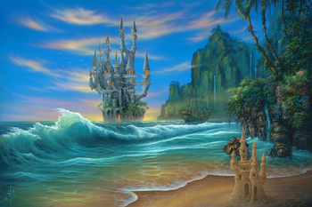
Фэнтези (англ. fantasy — «фантазия») — жанр современного искусства, разновидность фантастики. Фэнтези основывается на использовании мифологических и сказочных мотивов в современном виде. Жанр сформировался примерно в начале XV века. В середине XX века наиболее значительное влияние на формирование современного облика классического фэнтези оказали английские писатели Джон Рональд Руэл Толкин, автор романа «Властелин колец» и Клайв Стейплз Льюис (Хроники Нарнии).
Произведения фэнтези нередко напоминают историко-приключенческий роман, действие которого происходит в вымышленном мире, близком к реальному Средневековью или (реже) эпохе Возрождения, герои которого сталкиваются со сверхъестественными явлениями и существами. Зачастую фэнтези построено на основе архетипических сюжетов.
В отличие от научной фантастики, фэнтези не стремится объяснить мир, в котором происходит действие произведения, с научной точки зрения. Сам этот мир существует гипотетически, часто его местоположение относительно нашей реальности никак не оговаривается: это может быть как параллельный мир, так и другая планета, а его физические законы могут отличаться от земных. В таком мире допустимо существование богов, магии, мифических существ вроде драконов, великанов, фей и т. д. В то же время, принципиальное отличие фэнтези от сказок заключается в том, что чудеса в фэнтези являются нормой описываемого мира и действуют так же системно, как и законы природы в реальном мире.
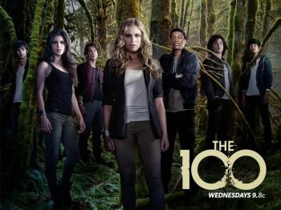
«100» или «Сотня» (англ. The 100) — сериал по заказу американского телеканала CW, съёмки которого проходили в Ванкуверe (Канада). Сериал разработан Джейсоном Ротенбергом и основан на одноимённой серии романов американской писательницы Кэсс Морган. Премьера шоу состоялась в среду, 19 марта 2014 года. Премьера седьмого финального сезона состоялась 20 мая 2020 года на CW.
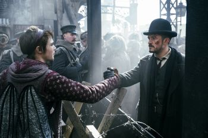
«Карнивал Роу» (англ. Carnival Row) — американский фэнтезийный телесериал, создателями которого выступают Рене Эчеваррия и Трэвис Бичем. Главные роли исполняют Орландо Блум и Кара Делевинь. Премьера первого сезона состоялась на Amazon Video 30 августа 2019 года.
27 июля 2019 года стало известно, что Amazon продлил телесериал на второй сезон.
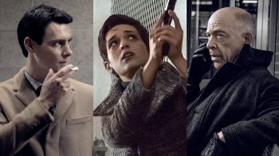
«По ту сторону», «Обратная сторона», «Контрмир», или «Двойник» (англ. Counterpart) — американский телесериал в жанре триллера и научной фантастики, созданный Джастином Марксом. Режиссёром первых двух эпизодов выступит Мортен Тильдум. Премьерный эпизод был показан 10 декабря 2017 года на телеканале Starz.
«Тёмная материя» (англ. Dark Matter) — канадский научно-фантастический сериал, созданный Джозефом Маллоззи и Полом Мули на основе комиксов с одноимённым названием. Канал Space 4 октября 2014 года разместил заказ на 13 эпизодов для первого сезона сериала. Премьера состоялась 12 июня 2015 года на телеканале Space. Критик Андрей Зильберштейн отметил, что перевод названия, более отвечающий сюжету, — «Тёмные дела» или «Тёмные сущности».
Выход второго сезона был анонсирован в сентябре 2015 года. Первая серия вышла 1 июля 2016 года.
В сентябре 2016 года телесериал был продлен на третий сезон, премьера которого состоялась 9 июня 2017 года.
1 сентября 2017 Syfy закрыл сериал после трех сезонов.
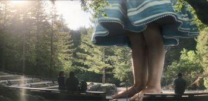
«Разрабы», или «Разработчики», или «Программисты», (англ. Devs) — драматический мини-сериал Алекса Гарленда, выходивший на Hulu с 5 марта по 16 апреля 2020 года.
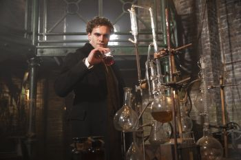
Jekyll and Hyde is a British fantasy TV drama consisting of 10 episodes. It aired on ITV in the United Kingdom from 25 October to 27 December 2015. On 5 January 2016 the creator Charlie Higson announced via his Twitter feed that ITV had declined a second series.
Based loosely on Robert Louis Stevenson's 1886 novella Strange Case of Dr Jekyll and Mr Hyde, it creates the character of Dr. Robert Jekyll, a grandson of the Victorian Dr. Henry Jekyll, who has inherited his grandfather's split personality and violent alter-ego. The series takes place in 1930s London and Ceylon.
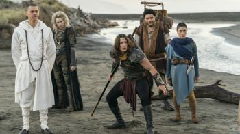
The New Legends of Monkey is an Australian-New Zealand television series inspired by Monkey, a Japanese production from the 1970s and 1980s which garnered a cult following in New Zealand, Australia, the U.K. and South Africa. The Japanese production was based on the 16th-century Chinese novel Journey to the West. The series is an international co-production between the Australian Broadcasting Corporation, New Zealand's TVNZ and Netflix.
The first season, consisting of ten episodes, premiered on the Australian Broadcasting Corporation's ABC Me television channel in Australia on 28 January 2018, and later debuted outside Australia and New Zealand on Netflix on 28 April. A second season, also ten episodes, was released on Netflix on August 7, 2020.
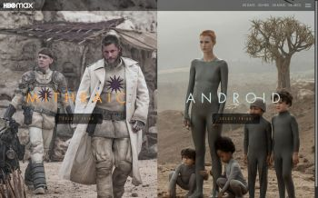
«Воспитанные волками» (англ. Raised by Wolves; в другом переводе — «Взращённые волками») — американский телесериал в жанре научной фантастики, созданный Аароном Гузиковским. Премьера прошла 3 сентября 2020 года на HBO Max. Первые две серии снял Ридли Скотт, который также является исполнительным продюсером сериала.
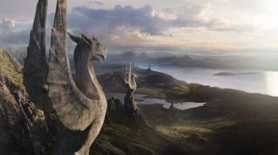
«Хроники Шаннары» (англ. The Shannara Chronicles) — американский телесериал в жанре фэнтези, созданный Альфредом Гофом и Майлсом Милларом. Шоу является адаптацией оригинальной «Трилогии Шаннары», написанной американским фантастом Терри Бруксом. Телесериал снят на студии в Окленде и на местности по всей Новой Зеландии.
Премьера первого сезона из десяти эпизодов состоялась 5 января 2016 года на телеканале MTV. 20 апреля 2016 года MTV продлил сериал на второй сезон. Тем не менее, 11 мая 2017 года стало известно, что второй сезон выйдет не на MTV, а на телеканале Spike.
17 января 2018 года стало известно о закрытии сериала после второго сезона.
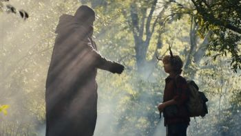
Sweet Tooth: мальчик с оленьими рогами (англ. Sweet Tooth) — американский телесериал по мотивам комиксов Sweet Tooth, который вышел на стриминговой платформе Netflix 4 июня 2021 года.
«Стража» (англ. The Watch) — британский телесериал, основанный на подцикле о Городской страже Анк-Морпорка из серии фэнтези-книг «Плоский мир» Терри Пратчетта. Премьера состоялась 3 января 2021 года.
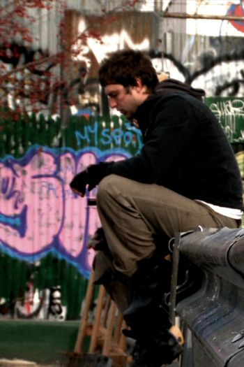
Zenith (also styled as Zenith - A Film by Anonymous) is a 2010 American psychological thriller directed by Vladan Nikolic and starring Peter Scanavino, Jason Robards III, and Ana Asensio. The screenplay concerns two men attempting to solve the same conspiracy theory. The title refers to a grand 'Zenith Conspiracy' formed by the film's protagonist, Ed Crowley. The film also utilizes an alternate reality game and transmedia storytelling to augment its narrative.
Zenith premiered at The IFC Center in New York City on October 1, 2010, and had an extended run in January 2011 at the Kraine Theatre with its distribution company, Cinema Purgatorio. All three parts have been made available as a free-to-share download at the BitTorrent powered distribution site VODO.